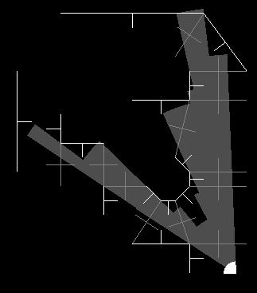

So how does it work? The drawing algorithm begins by drawing all visible surfaces within the cell currently occupied by the camera entity. It makes sense to first check for what's visible in your immediate surroundings. For example, sitting here at home on my computer, I wouldn't check to see if the grand-canyon is visible before my computer screen. Though I much prefer the former view, checking it is certainly a waste of time. The best drawing algorithms make the most efficient use of time by striving to do as little VSD checks as possible. The key to doing this is the underlying data-structure. A spacial partitioning matrix or BSP-tree can be used to minimize the number of VSD checks on static and sometimes dyanmic environments, because they encode the result of a lot of preprocessing done before the need to draw occurs. But I'm getting off track here. The data-structure used here, again, is the graph data-structure. The total number of VSD checks is minimized by recursing through a sub-tree of the graph that is highly likely to be much less than a spanning tree of the graph, since that would defeat the point. As mentioned earlier, all immediately visible surfaces within the currently occupied cell are drawn. Since the draw method is virtual, this may cause a wall polygon to draw, or an adjacent cell visible through a portal window. When the latter happens, the current FOVI (Field Of VIsion) is clipped against the portal's window, which can only make it smaller. This lessons the likelyhood of surfaces within the adjacent cell to be visible when that cell is drawn recursively. Also, and more importantly, the clipped FOVI ensures that only what is visible is actually drawn.
That last statement is not entirely true, but still okay to say, as I hope you'll see in a moment. If any portion of a wall is visible, then the entire wall polygon is drawn, despite the fact that perhaps only a portion of it intersects the current FOVI. The portions not visible are hidden by a Z-buffer check done by OpenGL much further down the rendering pipeline. There really is no net gain in performance in doing away with the increased overhead in performing further calculations on the wall polygon to determine exactly which portions of the wall lie within the FOVI. (In fact, it would be faster to perform such calculations, since this gives less work to OpenGL at rasterization time.) A flag can be set for walls, floors, and ceilings that attempts to perform these calculations, and is refered to as wall clipping or floor/ceiling clipping in the code. (It is a bit buggy, but nessisary to acheive some of those spacial paradoxes mentioned earlier.) But other than that, yes, only walls that are visible are actually drawn. The following topological screen-shot illustrates what's going on in the drawing algorithm for a single frame.
|  |
All line-segments (except for those showing surface normals) are surfaces in the map. The white lines are walls, and the grey lines are portal boundries. You will notice that some walls that are really not visible here are drawn because a single point on the line-segment just grazes the FOVI. This is a bug due to round-off error. (One solution might be to also check the angle made between the surface's surface normal and the heading of the current FOVI.) The white cone represents the initial FOVI. There are then several overlapping grey cones representing clipped FOVIs generated by the rendering algorithms as it traverses the scene graph drawing the scene.
The scene drawing algorithms is performing a DFS, since it recurses deaper into the graph whenever possible before drawing other surfaces in a cell. The algorithm needn't be DFS, but as far as I can imagine, the complexity of the algorithm is greatly reduced by using DFS insteading trying to do a BFS, which is unnecessary. But one reason for doing BFS here, instead of a DFS, would be to get rid of the need for a Z-buffer. With a BFS it would be possible to draw all the walls furthest from the camera first, and then all the walls in between and then closest to the camera in order. This would illiminate the need for a Z-buffer check, at least as far as the walls are concerned. But perhaps a better way to do away with the need for the Z-buffer check would be to provide a solid implimentation of floor, ceiling, and wall clipping.
So how does it work? Since the original motivation behind the BFS was to find shortest paths between any two given nodes in a graph, the only thing for me to do here is just describe how a BFS may be carried out, and thereby describe how it is carried in the program. Two lists are maintained throughout the search. The first contains explored cells, and the second, cells on the frontier that have yet to be explored. (Frontier cells are those on the periphery of the "glob" of cells that have already been explored.) The BFS order is made sure by the fact that newly discovered cells to be explored are placed on the back of a queue, and the oldest yet to be explored cells are pulled off the front of the queue to be processed. The frontier list is that queue. Initially, the cell occupied by one entity to be connected by the tether is put on the frontier list. For each iteration of the algorithm, the next cell is pulled off the front of the queue, the other entity to be connected by the tether is searched for in that cell, and if not found, all undiscovered adjacent cells are put on the back of the frontier list, the cell is put in the explored list, and the process repeats. The search portion of the algorithm terminates, of course, when the other entity is found while exploring a cell. To make the tether creation process easy, while searching in the BFS manner, a tree was being kept of the explored cells where each cell kept a pointer to its parent. The tether path is then easily found by following the path up this tree to the root.
It was important for me to keep the explored list in addition to the frontier list so that I could do some clean-up of the data manipulated by the algorithm during this entire process, and especially if the process failed.
My description of all this isn't that great. Looking at the actual code in tether.cpp might make things much clearer.